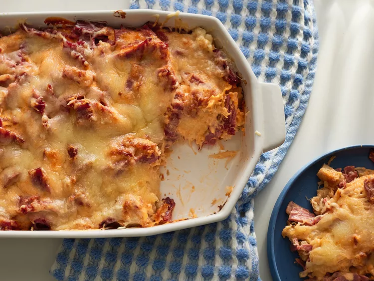

Reuben Casserole

Description
This tasty Reuben casserole with layers of sauerkraut, corned beef, Swiss cheese, rye bread crumbs,
and Russian-style salad dressing is like a baked deli sandwich in a dish.
Ingredients
- 2 ½ cups vegetarian chicken-flavored broth
- 2 cups low-sodium vegetable broth
- 3 tablespoons unsalted butter
- 1 tablespoon extra-virgin olive oil
- ½ medium yellow onion, diced
- ¾ teaspoon red pepper flakes